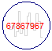

GlobalSeedDefines global settings for the blocks of sublibrary Noise, especially a global seed value is defined |
Information
This information is part of the Modelica Standard Library maintained by the Modelica Association.
When using one of the blocks of sublibrary Noise, on the same or a higher hierarchical level, Noise.GlobalSeed must be dragged resulting in a declaration
inner Modelica.Blocks.Noise.GlobalSeed globalSeed;
The GlobalSeed block provides global options for all Noise blocks of the same or a lower hierarchical level. The following options can be selected:
Icon Description  useAutomaticSeed=false (= default):
A fixed global seed is defined with Integer parameter fixedSeed. The value of fixedSeed is displayed in the icon. By default all Noise blocks use fixedSeed for initialization of their pseudo random number generators, in combination with a local seed defined for every instance separately. Therefore, whenever a simulation is performed with the same fixedSeed exactly the same noise is generated in all instances of the Noise blocks (provided the settings of these blocks are not changed as well).
This option can be used (a) to design a control system (e.g. by parameter optimization) and keep the same noise for all simulations, or (b) perform Monte Carlo Simulations where fixedSeed is changed from the environment for every simulation, in order to produce different noise at every simulation run.useAutomaticSeed=true:
An automatic global seed is computed by using the ID of the process in which the simulation takes place and the current local time. As a result, the global seed is changed automatically for every new simulation, including parallelized simulation runs. This option can be used to perform Monte Carlo Simulations with minimal effort (just performing many simulation runs) where every simulation run uses a different noise.enableNoise=false:
The noise in all Noise instances is switched off and the blocks output a constant signal all the time (usually zero). This option is useful, if a model shall be tested without noise and the noise shall be quickly turned off or on.
Additionally, the globalSeed instance calls function initializeImpureRandom to initialize the impure random number generators (impureRandom and impureRandomInteger). The return value of this function is stored in parameter id_impure. Whenever one of the impure random number generators need to be called, "globalSeed.id_impure" has to be given as input argument.
Note, the usage of this block is demonstrated with examples AutomaticSeed and ImpureGenerator.
Please note that only one globalSeed instance may be defined in the model due to the initialization of the impure random number generators with initializeImpureRandom! So, the block will usually reside on the top level of the model.
Parameters (5)
| enableNoise |
Value: true Type: Boolean Description: = true, if noise blocks generate noise as output; = false, if they generate a constant output |
|---|---|
| useAutomaticSeed |
Value: false Type: Boolean Description: = true, choose a seed by system time and process id; = false, use fixedSeed |
| fixedSeed |
Value: 67867967 Type: Integer Description: Fixed global seed for random number generators (if useAutomaticSeed = false) |
| seed |
Value: Type: Integer Description: Actually used global seed |
| id_impure |
Value: Type: Integer Description: ID for impure random number generators Modelica.Math.Random.Utilities.impureXXX |
Used in Examples (8)
|
Modelica.Blocks.Examples.NoiseExamples
Demonstrates the most simple usage of the UniformNoise block |
|
|
Modelica.Blocks.Examples.NoiseExamples
Demonstrates noise with startTime and automatic local seed for UniformNoise |
|
|
Modelica.Blocks.Examples.NoiseExamples
Demonstrates noise with different types of distributions |
|
|
Modelica.Blocks.Examples.NoiseExamples
Demonstrates the computation of properties for uniformally distributed noise |
|
|
Modelica.Blocks.Examples.NoiseExamples
Demonstrates the computation of properties for normally distributed noise |
|
|
Modelica.Blocks.Examples.NoiseExamples
Demonstrates the usage of the impure random number generator |
|
|
Modelica.Blocks.Examples.NoiseExamples
Demonstrates how to model measurement noise in an actuator |
|
|
Modelica.Blocks.Examples.NoiseExamples
Demonstrates how to model wind turbulence for aircraft with the BandLimitedWhiteNoise block (a simple model of vertical Dryden gust speed at low altitudes < 1000 ft) |
Used in Components (2)
|
Modelica.Blocks.Examples.NoiseExamples.Utilities
Block generating random numbers with the impure random number generator |
|
|
Modelica.Blocks.Interfaces
Partial noise generator |